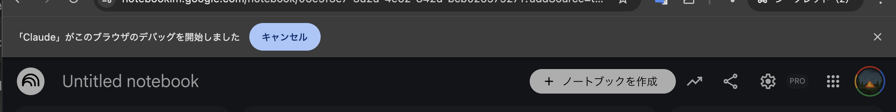

セミナー企画のための
「ハルシネーション抑制」
セキュアなAIリサーチシステムの構築
最新AIエージェント × セキュア環境で実現する、
嘘のない高品質リサーチ

クライアントの課題とご要望
「直近で開催する自社セミナーに向けて、圧倒的に質の高い情報収集（リサーチ）を行いたい。AIを活用して効率化したいが、嘘の情報（ハルシネーション）やセキュリティリスクは絶対に避けたい」
このような企業様からのご相談に対し、最新のAIエージェントとセキュアな環境構築を組み合わせた、独自の「完全自動・高精度リサーチアーキテクチャ」をご提案・構築いたしました。
「YouTube × AI」リサーチが抱える
3つの「壁」
YouTubeには、専門家や実践者が惜しみなくノウハウを公開している「宝の山」のようなコンテンツが溢れています。
しかし、この膨大な知見をAIリサーチに活かそうとすると、3つの大きな壁に阻まれます。
膨大な動画を
1つずつ見る時間がない
YouTubeには優良なノウハウが詰め込まれていますが、数十〜数百本の動画を一つずつ視聴・選別するのは現実的に不可能です。
NotebookLMへの
読み込みが困難
ハルシネーションの少ないNotebookLMに動画を読み込めますが、文字起こしデータがない動画は取り込めず、検索機能を使っても約4割のデータが破損・除外されることもあります。
一括インポートの
限界
NotebookLMに手動でURLをインポートする場合、一度に読み込める数は限られ、1つずつ文字起こしの有無を確認してから登録する手間は膨大です。
コンサルタントが提案する
「完全解決アーキテクチャ」
これらの壁を完全に突破するため、以下の3ステップからなる独自のAIリサーチフローを構築しました。

AIエージェントによる「極上のソース」自動抽出
Anthropic社の最新ブラウザ拡張機能「Claude for Chrome」を導入します。
このAIエージェントに「目的のテーマでYouTubeを検索し、内容を把握した上で、文字起こしデータが確実に存在する上質な動画だけをリスト化して」と指示を出します。人間が動画を1つずつ見る代わりに、AIがブラウザ上で自動的に選別テストを行い、完璧なURLリストを抽出します。
企業データを守る「ゼロトラスト・セキュリティ環境」
Claude for
Chromeは画面上の全データを読み取る強力な権限を持つため、そのまま導入すると企業の機密情報（Gmailやパスワード等）が漏洩するリスクがあります。
そこで、「AI検証用の独立したChromeプロファイル」を作成するというハックを用います。普段の業務環境とは完全に隔離された「空っぽのブラウザ（サンドボックス）」でAIを動かすことで、情報漏洩リスクを物理的かつ完全にゼロに抑え込みます。

プロからの重要補足：全画面に出る「デバッグ警告」の真実
隔離された検証用プロファイルでClaudeを稼働させると、
普段使っているメインのChrome画面上部にも「『Claude』がこのブラウザのデバッグを開始しました」という警告バナーが表示されることがあります。

結論から申し上げますと、これは全く心配いりません。メイン環境の情報は一切漏れていません。
これはGoogle Chromeの極めて厳格な仕様によるものです。拡張機能が画面操作（デバッグAPI）を開始すると、Chromeは「念のため、いま開いているすべてのウィンドウに一斉アナウンスをする」という設計になっています。
バナーがメイン画面に出ていても、Claudeの「目」と「手」は隔離された検証用プロファイル（サンドボックス）の中にしか存在できません。あなたのGmailや社内システムのパスワードが読み取られることは物理的に不可能ですので、安心してバナーを無視（または×で閉じる）して作業を進めてください。
NotebookLMへの完全インポートと「専用AI」の爆誕
Claudeが厳選した「文字起こしアリの完璧なYouTubeリスト」を、NotebookLMに一括インポートします。
データ破損による取りこぼしが一切ないため、数十時間分の良質な動画情報だけを完璧に学習した「絶対に嘘をつかない、あなたのための最強のセミナー準備用AI」が完成します。
実証実験（PoC）の驚異的な成果
このシステムの効果を実証するため、「脊髄損傷の人が歩けるようになった事例」という極めて専門的でリサーチが難しいお題でテストを行いました。
通常のGeminiやChatGPTのディープリサーチ
表面的なWeb記事の要約にとどまり、実践的なノウハウに欠ける。
Claude自動抽出 × NotebookLM
数十本の有益なYouTube動画を一瞬で選別・インポート。動画を1秒も再生することなく、NotebookLMに質問を投げるだけで「実際に効果のあった具体的なリハビリ手法や最新事例」をピンポイントで引き出すことに成功。
圧倒的なリサーチ時間の削減と、出力される情報の質の高さを両立した、
まさに「次世代のAIリサーチの最適解」です。
まとめ：AIを「安全に・実務で」
使い倒すために
最新のAIツールは強力ですが、「ツールの弱点（データの破損）」と「企業リスク（セキュリティ）」を理解せずに導入すると、かえって業務効率を落とすことになります。
当コンサルティングでは、単なるツールの紹介ではなく、
「現場の課題を解決し、企業情報を守り抜きながら、AIのパフォーマンスを120%引き出す運用アーキテクチャ」をご提供します。